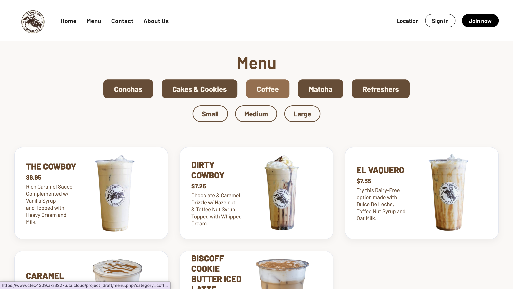
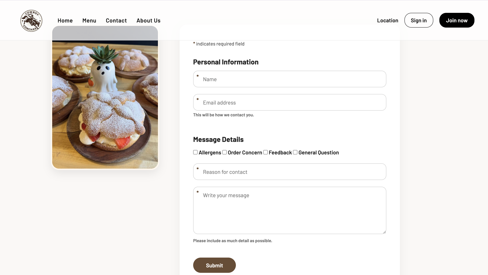
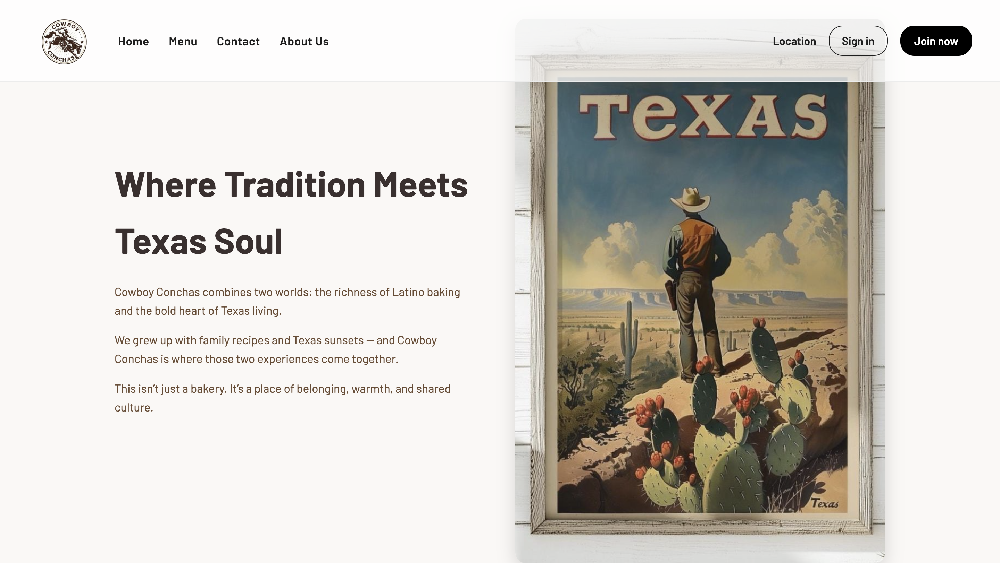

Web Design · Digital Strategy · SEO
Cowboy Conchas Website
Designed and developed a website concept for Cowboy Conchas, a locally owned Arlington bakery with a strong social media presence but no dedicated website. The project combined web design, front-end development, audience research, competitor analysis, and SEO strategy to improve discoverability and create a stronger digital experience for customers.

Final homepage design for Cowboy Conchas, a locally owned multicultural bakery in Arlington, Texas. Fall 2025.
Overview
Cowboy Conchas is a locally owned bakery in Arlington, Texas known for its creative conchas, handcrafted drinks, and western-inspired brand identity. The business had a strong visual personality but limited online presence, creating an opportunity to better showcase its products, communicate its story, and connect with customers online.
Our three-person team developed a digital marketing strategy and designed and coded a multi-page website concept for Cowboy Conchas. Completed as part of an Internet Marketing Communication course, the project included competitor analysis, audience segmentation, SEO planning, content strategy, front-end development, and PHP implementation.
As project lead, I directed the overall website strategy, led the digital marketing research, designed and developed the homepage, and provided feedback throughout the build process to maintain consistency across the final website.
The Design Challenge
How might we create a website that reflects Cowboy Conchas' brand identity while making it easier for customers to discover the bakery, explore products, and take action online?
The Problem
Cowboy Conchas had built a loyal local following through social media, but lacked a dedicated website. While existing customers could discover updates through Instagram, potential customers searching online had limited ways to learn about the business, explore its offerings, or make contact.
Without a centralized web presence, the bakery had no reliable way to showcase its menu, communicate its brand story, support local search visibility, or guide customers toward key actions. Our goal was to create a website that strengthened discoverability while reflecting the personality and identity that made Cowboy Conchas unique.
No Web Presence
Without a website, Cowboy Conchas had limited visibility among customers searching online for bakeries, coffee shops, and local dessert destinations.
Brand Identity Not Communicated
The unique identity behind Cowboy Conchas, blending traditional Mexican pan dulce with Texas-inspired branding, was only visible to people who already followed them on social media.
No Customer Contact Path
There was no centralized way for potential customers to ask questions, find business information, or get in contact without relying on social media.
SEO Gap
Without a website, Cowboy Conchas could not appear in many local search results. Competitors with established websites had greater opportunities to attract customers actively searching for bakeries, coffee shops, and specialty desserts in the DFW area.
My Contributions
As project lead, I guided both the digital strategy and website development. The items below represent the areas I personally owned throughout the project.
Project Leadership
Led the three-person team from initial client research through final presentation. Coordinated work across strategy, design, and development, and kept the project grounded in the audience and brand goals we identified in research.
Homepage Design and Build
Designed and developed the homepage in HTML and CSS, including the hero section with product photography, navigation, promotional banner, and welcome copy. Focused on creating a warm, on-brand first impression that reflected the bakery's personality.
Digital Strategy and Research
Led competitor analysis, audience research, and SEO planning to identify opportunities for local search visibility and customer acquisition. Developed audience segments across geographic, demographic, psychographic, and behavioral dimensions, and created the keyword strategy used throughout the site.
Feedback and Direction
Reviewed teammate work across the menu, About Us, and contact pages, providing design and content feedback to maintain consistency across the site. Also reviewed the PHP contact form implementation and page layouts to ensure they aligned with the overall design direction.
Research and Strategy
Before designing and developing the site, we conducted competitor research and audience analysis to understand how similar bakeries positioned themselves online and who Cowboy Conchas was trying to reach. These findings informed the website structure, content strategy, visual direction, and SEO planning.
Competitive Analysis
| Competitor | Strengths | Weaknesses |
|---|---|---|
| Pan Pan Bakery (Dalworthington Gardens) | Mexican-Japanese fusion concept; strong social media reach; viral TikTok presence | Limited hours and long lines reduce convenience for repeat customers |
| Anakaren Panaderia (Arlington) | Over 1,000 high ratings; wide variety of traditional pan dulce; strong local loyalty; extended hours | Minimal online presence; outdated website; lacks modern branding appeal |
| Panaderia Celaya (Grand Prairie) | Wide variety of Mexican pan dulce; loyal customer base | No website; minimal online presence; limited reach to younger audiences |
The competitor analysis revealed an opportunity for Cowboy Conchas to combine the strengths of both groups. The business already had a recognizable brand and active social media presence, but lacked a dedicated website. By creating a centralized online experience, we could improve discoverability, showcase the menu and brand story, and provide customers with a clearer path to engage with the business.
Target Audience
Geographic
DFW residents, particularly those in Arlington and surrounding communities, looking for local bakeries, coffee shops, and specialty dessert destinations.
Demographic
Adults ages 18–35 who enjoy trying new food experiences and are drawn to businesses that combine quality products with a strong brand identity.
Psychographic
Social media active consumers who value supporting local businesses, discovering unique food experiences, and sharing recommendations with others.
Behavioral
Customers who frequently search online before visiting a business and value convenience, visual appeal, menu accessibility, and clear business information.
SEO Strategy
To support local discoverability, we developed an SEO strategy focused on the search behaviors of potential customers in the DFW area. We identified high-intent keywords related to bakeries, coffee shops, conchas, and specialty desserts, then incorporated those terms throughout the site's content structure and page copy. The goal was to help Cowboy Conchas appear in relevant local searches while attracting customers who were actively looking for businesses like theirs.
Site Design
The visual direction was designed to reflect Cowboy Conchas' brand identity while supporting the business goals identified during research. A warm brown color palette, cream backgrounds, clean typography, and large product photography helped communicate the bakery's personality while keeping menu items and key actions easy to find.
Homepage
The homepage combined product photography, promotional messaging, and clear navigation to introduce the brand, highlight featured offerings, and guide customers toward key actions.
Menu Page

The menu was designed to help customers quickly browse products by category while making individual items easy to compare. Clear pricing, product descriptions, and photography support decision-making before a visit or purchase inquiry.
Contact Page

The contact page created a direct communication channel between customers and the business. The PHP form organized inquiries by topic, making it easier for customers to ask questions, submit order requests, or provide feedback without relying on social media messaging.
About and Location

The About & Location page helped communicate Cowboy Conchas' brand identity while providing practical information customers needed before visiting. Combining the brand story, location details, and store hours helped build trust, establish credibility, and reduce uncertainty for first-time customers..
Design Rationale
Warm Color Palette
Brown and cream tones were chosen to match the visual identity of the product and create a cozy, inviting atmosphere that reflects the bakery's personality.
Product-First Imagery
Large, high-quality food photography anchors every page. For a bakery, product photography plays a critical role in attracting attention and communicating quality. Large, high-quality images helped showcase offerings and encourage exploration.
Simple Navigation
A clean top nav with four clear sections, Home, Menu, Contact, and About Us, keeps the site easy to move through for customers who just want to find what they need quickly.
Credibility Cues
Many customers discover local businesses online before deciding to visit. Store hours, location details, social media links, and brand information were included to answer common questions and help customers feel confident taking the next step.
Reflection
Strategy and design are stronger together. What made this project different from a typical web design exercise was that every visual decision connected back to audience research. Every visual and content decision traced back to what we learned about the audience and the information they needed to feel confident visiting the business.
Giving effective feedback is a design skill. Leading a team where each person owned a different part of the build taught me how to communicate design intent clearly enough that someone else could execute it. Vague feedback produces inconsistent results. Specific, grounded feedback that references the user and the brand goal actually moves the work forward.
SEO starts with understanding user intent. Identifying the right keywords meant understanding how potential customers search for businesses like Cowboy Conchas and the language they use when looking for products and experiences. That process reinforced an important UX principle: design, content, and navigation should reflect the user's mental model, not the designer's.
What I would do differently: We would plan the full page structure before writing a single line of code, set up our shared CSS from the start, and test the mobile layout much earlier. Working across three people without a shared system from day one created extra work at the end. That lesson has stayed with me.